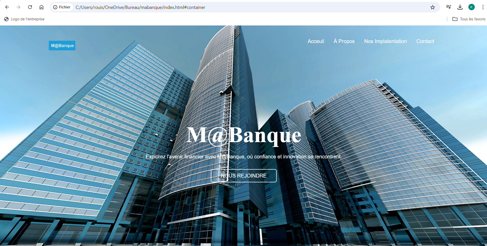

Projet : Mabanque

Projet : Mabanque
Le projet consiste à sécuriser l’infrastructure informatique de l’entreprise M@ Banque en corrigeant les failles du site web, en protégeant les serveurs (FTP, HTTP, AD, SSH), en mettant en place une messagerie sécurisée et un système de sauvegarde, tout en développant un site web fonctionnel avec base de données.
Cahier des charges
La banque possède divers services informatiques à sécuriser
- Un serveur web permettant l’accès aux comptes clients, avec des pages d’accueil et de connexion.
- Une base de données pour la gestion des comptes clients.
- Un serveur Active Directory (AD) pour la gestion des sessions employées, comprenant au moins un compte développeur et un compte administrateur.
- Un serveur FTP pour la mise à jour du site web par le développeur.
- Un accès distant SSH pour l’administration.
- Un service de messagerie pour la communication entre clients et conseillers, avec au moins un compte client et un compte conseiller.
Menaces identifiées : Deux attaques récentes soulignent des faiblesses de sécurité
- 1° Défiguration du site web, facilitée par un mot de passe FTP faible et une configuration de serveur ouverte.
- 2° Hameçonnage, avec des emails frauduleux visant à voler les identifiants bancaires des clients.
Solutions de sécurisation : Pour contrer ces menaces, plusieurs mesures sont recommandées
- Chiffrement HTTPS pour le serveur web.
- Utilisation de FTPS avec accès limité (désactivation des accès anonymes) et une liste blanche autorisant seulement le développeur.
- Sauvegardes régulières du site pour contrer les attaques de défiguration ou de rançongiciels.
- Adoption de politiques de mots de passe robustes pour tous les accès.
- Mise en place d’une messagerie sécurisée par chiffrement et signature numérique pour protéger l’authentification et l’intégrité des communications.
- Un service de messagerie pour la communication entre clients et conseillers, avec au moins un compte client et un compte conseiller.
- Ces mesures visent à renforcer la sécurité globale des services et à protéger les données sensibles de la banque.
A savoir
- Ce projet a été conçu comme un travail de groupe, avec une répartition des rôles en fonction des spécialités de chaque étudiant. Les binômes étaient formés de manière à associer un étudiant en SLAM (développement logiciel) avec un étudiant en SISR (réseaux et infrastructures systèmes). Cette configuration permettait à chacun de se concentrer sur ses compétences principales : les étudiants en SLAM étaient davantage impliqués dans les aspects de développement et de configuration des applications, tandis que ceux en SISR se concentraient sur la sécurisation et la gestion des infrastructures réseaux et serveurs.
- Ce projet a été conçu comme un travail de groupe, avec une répartition des rôles en fonction des spécialités de chaque étudiant. Les binômes étaient formés de manière à associer un étudiant en SLAM (développement logiciel) avec un étudiant en SISR (réseaux et infrastructures systèmes). Cette configuration permettait à chacun de se concentrer sur ses compétences principales : les étudiants en SLAM étaient davantage impliqués dans les aspects de développement et de configuration des applications, tandis que ceux en SISR se concentraient sur la sécurisation et la gestion des infrastructures réseaux et serveurs.